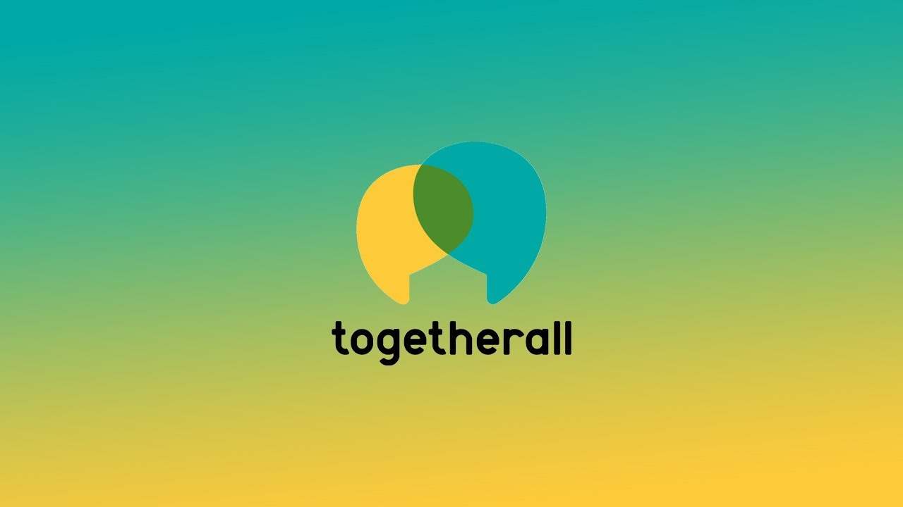
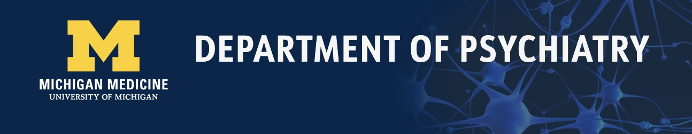
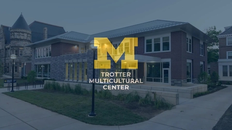
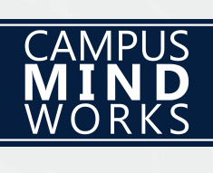
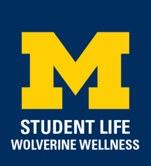
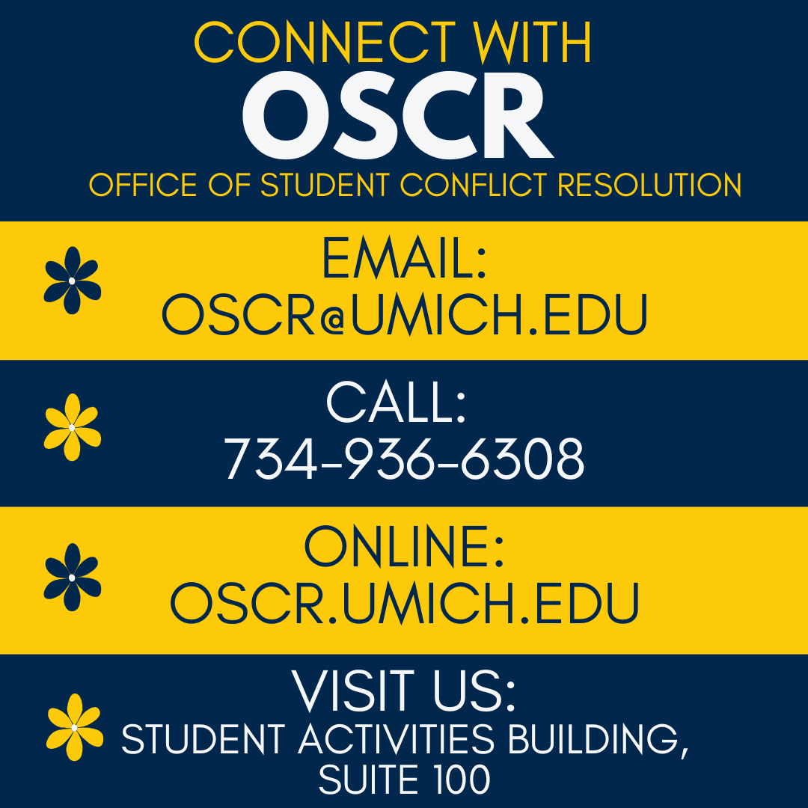
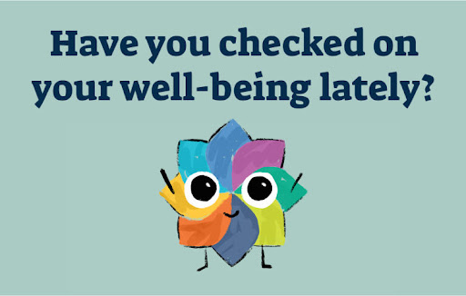

University Health Service offers comprehensive outpatient medical services, conveniently located on central campus. The University Health Service is committed to promoting and protecting the health of students and other members of the University community so that they may achieve their educational goals.
Counseling and Psychological Services is committed to providing multicultural and multidisciplinary expert therapeutic support. Clinical services include brief personal therapy for individuals, couples and groups and crisis intervention.
Recognizing that some students who are feeling isolated, depressed, or anxious may find it challenging to connect with our resources and verbally express their needs, Counseling and Psychological Services (CAPS) is pleased to announce the piloting of Togetherall, an online, anonymous peer-support tool available for free to our students. Togetherall is a clinically moderated, online peer-to-peer mental health community that reaches and empowers a diverse population of students to anonymously seek and provide support.
The Department of Psychiatry is part of the University of Michigan Health System and provides patients with state-of-the-art treatment and care of psychiatric disorders, much of it based on the innovative research done by our faculty.
Intercultural engagement and inclusive leadership education initiatives. Our work also involves information, services, and tools to help students, staff, faculty, and family members. Together, we can achieve a campus climate of mental ‘health’ where each student can engage thoughtfully as an active community member and to help their fellow students.
The Campus Mind Works website was created to support University of Michigan students who have been diagnosed with an ongoing mental health disorder, to help manage their illness and get the most out of their college experience.
Provides Wellness Coaching and much more. Their mission is to partner with students to foster personal and community well-being in college and beyond.
Offers multiple pathways for resolving conflict. The Office of Student Conflict Resolution promotes a safe and scholarly community in which students navigate conflict in a peaceful, socially just, and self-reflexive manner. OSCR offers a spectrum of conflict resolution pathways that are educationally focused, student-driven, community owned, and restorative in nature, which are adaptable to meet the needs of individuals experiencing conflict.
Addresses the needs of the U-M community by using an established framework, multi-dimensional approach and increased compassion to support the well-being of our people, places and planet.